Cơ sở toán học cho AI · Học kỳ 1, 2026–2027
Trường Đại học Công nghệ · Đại học Quốc gia Hà Nội
Nhắc lại: hệ phương trình và bất phương trình tuyến tính, hạng ma trận, tập lồi và tổ hợp lồi.
Ký hiệu: $x,c\in\mathbb R^n$, $A\in\mathbb R^{m\times n}$, $b\in\mathbb R^m$; $P$ là miền khả thi.
Lập quy hoạch tuyến tính từ dữ kiện: biến, đơn vị, mục tiêu, ràng buộc, miền biến.
Chuyển về dạng chuẩn; tính nghiệm cơ sở khả thi; xác định kết cục và điểm cực biên tối ưu.
Giải bài toán đường đi theo tầng bằng phương trình Bellman.
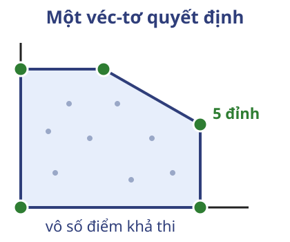
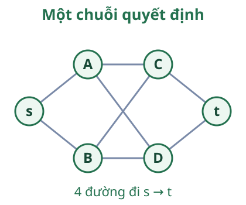
Quy hoạch tuyến tính: miền có đỉnh và bài toán có nghiệm tối ưu thì có một đỉnh tối ưu.
Quy hoạch động: chi phí nhỏ nhất từ một nút tới đích chỉ phụ thuộc nút đó.
Muốn khai thác cấu trúc đỉnh của miền khả thi, trước hết phải viết quyết định thành mô hình toán học.
Biến quyết định · Hàm mục tiêu · Ràng buộc · Miền khả thi · Hồi quy $L_1$
Nhu cầu: chọn sản lượng hai loại hộp hạt có tổng lợi ích lớn nhất, không vượt giới hạn.
| Dữ kiện | Loại 1 | Loại 2 | Giới hạn chung |
|---|---|---|---|
| Lợi ích mỗi nghìn hộp | $2$ | $3$ | |
| Giờ máy mỗi nghìn hộp | $1$ | $2$ | $54$ giờ |
| Sản lượng tối đa (nghìn hộp) | $30$ | $20$ |
Đặt $x_1,x_2\ge0$ là sản lượng hai loại (nghìn hộp), gọi là biến quyết định.
Mỗi giới hạn của bài toán hộp hạt cho một bất phương trình, hai vế cùng đơn vị.
Phương án thỏa mọi ràng buộc là khả thi; tập phương án khả thi là miền khả thi $P$.
Tổng lợi ích là $z=2x_1+3x_2$. Mô hình đầy đủ:
| Phương án | Giờ máy dùng | Khả thi | $z$ |
|---|---|---|---|
| $(30,12)$ | $54$ | có | $96$ |
| $(14,20)$ | $54$ | có | $88$ |
| $(30,20)$ | $70$ | không | không xét |
Nhắc lại: quy hoạch tuyến tính (linear programming, LP) có mục tiêu và hữu hạn ràng buộc đều tuyến tính.
Dạng ma trận, với $c\in\mathbb R^n$, $A\in\mathbb R^{m\times n}$, $b\in\mathbb R^m$:
Giả thiết: tỉ lệ (không có $x_1^2$), cộng tính (không có $x_1x_2$), biến nhận giá trị thực (không có biến nguyên).
Bài toán hộp hạt: $\max\ 2x_1+3x_2$ với $x_1\le30$, $x_2\le20$, $x_1+2x_2\le54$, $x\ge0$.
Xác định $n$, $m$, $c$, $A$, $b$ của dạng ma trận.
Diễn giải: hàng $i$ của $A$ chứa hệ số của giới hạn $i$; $2x_1$ tỉ lệ với $x_1$, $2x_1+3x_2$ là tổng hai đóng góp.
Với $h_i,x\in\mathbb R^n$, $y_i\in\mathbb R$, $i=1,\ldots,M$: phần dư $r_i=h_i^Tx-y_i$.
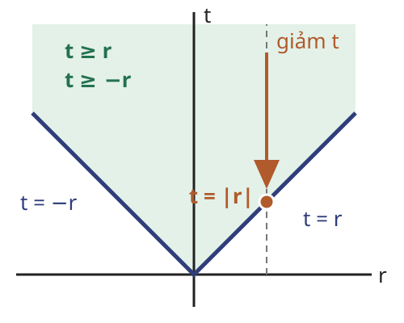
Nhu cầu: $\sum_i|r_i|$ ít nhạy với ngoại lai (outlier) hơn bình phương nhưng không khả vi tại $r_i=0$.
Nhắc lại: $|r|=\min\{t:\ t\ge r,\ t\ge-r\}$; thay mỗi $|r_i|$ bằng biến phụ $t_i$.
Diễn giải: biến $(x,t)\in\mathbb R^{n+M}$, mục tiêu và $2M$ ràng buộc đều tuyến tính, nên bài toán là một LP.
Câu hỏi: dựng mô hình cho hai luồng suy luận dùng chung $14$ phút GPU mỗi giờ.
| Dữ kiện | Luồng 1 | Luồng 2 |
|---|---|---|
| Lợi ích mỗi nghìn yêu cầu | $4$ | $5$ |
| Phút GPU mỗi nghìn yêu cầu | $2$ | $1$ |
| Tối đa (nghìn yêu cầu) | $8$ | $6$ |
Lời giải:
Muốn tìm tập ứng viên hữu hạn, phải mô tả toàn bộ miền khả thi và tính được các đỉnh bằng đại số.
Nửa không gian · Đa diện · Đường mức · Dạng chuẩn · Nghiệm cơ sở khả thi
Nhu cầu: mô tả toàn bộ miền khả thi, không chỉ vài điểm.
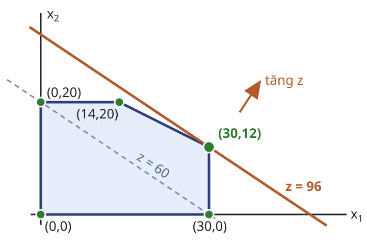
Nhắc lại: đa diện (polyhedron) là tập nghiệm của hữu hạn bất phương trình tuyến tính, với $A\in\mathbb R^{m\times n}$, $b\in\mathbb R^m$:
Định nghĩa. $P$ bị chặn nếu có $K$ để $\|x\|\le K$ với mọi $x\in P$.
Nhu cầu: muốn tính đỉnh bằng giải hệ, mọi ràng buộc phải viết thành phương trình.
Định nghĩa. Trong bài này, dạng chuẩn (standard form) của LP là
Nhắc lại: ba phép chuyển ràng buộc và biến về dạng chuẩn.
| Dạng gốc | Dạng chuẩn |
|---|---|
| $a^Tx\le\beta$ | $a^Tx+s=\beta$, $s\ge0$ (biến bù) |
| $a^Tx\ge\beta$ | $a^Tx-s=\beta$, $s\ge0$ (biến dư) |
| $x_j$ tự do | $x_j=x_j^+-x_j^-$, $x_j^+,x_j^-\ge0$ |
Viết dạng chuẩn của $x_1\le30$, $x_2\le20$, $x_1+2x_2\le54$, $x\ge0$ với biến bù $s_i\ge0$.
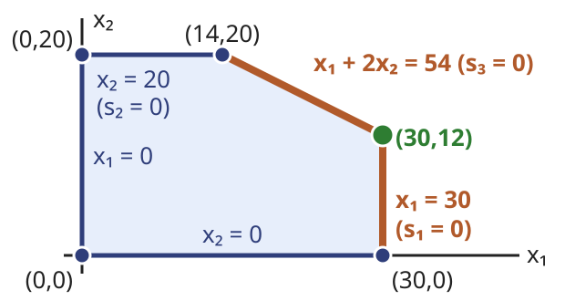
$\bar A=[\,A\ \ I\,]$, $\operatorname{rank}(\bar A)=3$, $n=5$ (đếm cả biến bù); mục tiêu $c=(2,3,0,0,0)$.
Diễn giải: tại $(30,12)$, $s_1=s_3=0$: $x_1\le30$, $x_1+2x_2\le54$ hoạt động; $s_2=8$.
Trực quan. Cho $n-m$ biến bằng $0$, rồi giải $m$ biến còn lại từ một hệ vuông.
Định nghĩa. Cho $P=\{x:Ax=b,\ x\ge0\}$, $\operatorname{rank}(A)=m$, và tập chỉ số $B\subset\{1,\ldots,n\}$, $|B|=m$, có ma trận con $A_B$ (gồm các cột $A_j$, $j\in B$) khả nghịch. Vector
là nghiệm cơ sở; nếu $x_B\ge0$ thì là nghiệm cơ sở khả thi (basic feasible solution).
$B$ gọi là cơ sở (basis); $x_j$, $j\in B$, là biến cơ sở.
Định nghĩa. Nghiệm cơ sở khả thi suy biến (degenerate) nếu có thành phần của $x_B$ bằng $0$.
Ví dụ. Hệ $x_1+x_3=1$, $x_2+x_4=0$, $x\ge0$, với $m=2$, $n=4$:
Diễn giải: hai cơ sở khác nhau cho cùng một điểm, vì biến cơ sở $x_2$ hoặc $x_4$ bằng $0$.
Câu hỏi: xét hệ dạng chuẩn, thứ tự cột $(x_1,x_2,s_1,s_2,s_3)$ của $\bar A$; $A_B$ gồm các cột của $\bar A$ có chỉ số thuộc $B$:
Lời giải:
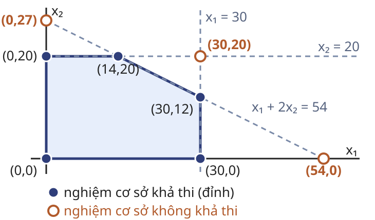
Diễn giải: tám nghiệm cơ sở là giao các đường biên; năm nghiệm khả thi là năm đỉnh.
Muốn thay miền khả thi bằng hữu hạn đỉnh, cần định nghĩa đỉnh, điều kiện có đỉnh tối ưu và cách duyệt đỉnh.
Điểm cực biên · Bốn kết cục · Đỉnh kề · Thuật toán duyệt đỉnh kề
Nhu cầu: tiêu chuẩn nhận ra đỉnh trong $\mathbb R^n$ chỉ bằng phép toán vector.
Trực quan. Đỉnh là điểm không nằm giữa hai điểm khác nhau của miền.
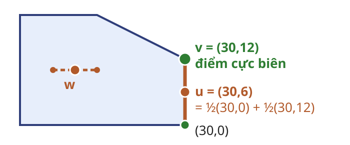
Định nghĩa. Cho tập lồi $P$. Điểm $v\in P$ là điểm cực biên (extreme point, gọi tắt là đỉnh) nếu đẳng thức
chỉ xảy ra khi $y=z=v$.
Nhu cầu: định nghĩa điểm cực biên không cho cách tính; nghiệm cơ sở khả thi thì có.
Định lý. Cho $P=\{x:Ax=b,\ x\ge0\}$, $A\in\mathbb R^{m\times n}$, $\operatorname{rank}(A)=m$, $x\in P$. Các mệnh đề sau tương đương:
(i) $x$ là điểm cực biên của $P$;
(ii) $x$ là nghiệm cơ sở khả thi;
(iii) các cột $A_j$ ứng với $x_j>0$ độc lập tuyến tính.
Hệ quả. Với $P=\{x:Ax=b,\ x\ge0\}$, $\operatorname{rank}(A)=m$: điểm cực biên có nhiều nhất $m$ thành phần dương; $P$ có hữu hạn điểm cực biên.
Chứng minh. Cột của thành phần dương độc lập trong $\mathbb R^m$, nên có nhiều nhất $m$ cột.
Mỗi điểm cực biên là $x_B$ của ít nhất một tập $B$; có không quá $\binom nm$ tập.
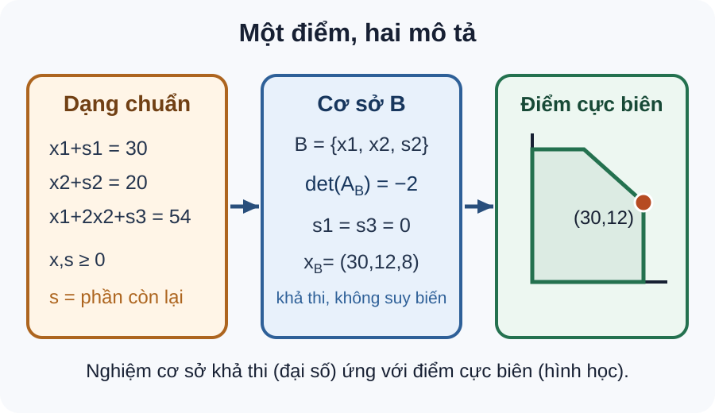
Nhu cầu: kết luận “có điểm cực biên tối ưu” chỉ có nghĩa khi miền có điểm cực biên.
Ví dụ. Nửa mặt phẳng $\{x\in\mathbb R^2:x_2\ge0\}$ không có điểm cực biên: $(a,b)$ là trung điểm của $(a-1,b)$ và $(a+1,b)$.
Định nghĩa. $P$ chứa đường thẳng nếu có $x\in P$ và $d\ne0$ sao cho $x+td\in P$ với mọi $t\in\mathbb R$.
Định lý. Cho $P$ là đa diện không rỗng. $P$ có điểm cực biên khi và chỉ khi $P$ không chứa đường thẳng.
Hệ quả. Đa diện dạng chuẩn $\{x:Ax=b,\ x\ge0\}$ không rỗng có ít nhất một điểm cực biên.
Chứng minh (hệ quả). Nếu $x+td\ge0$ với mọi $t\in\mathbb R$ thì $d=0$, nên đa diện dạng chuẩn không chứa đường thẳng.
Nhu cầu: trước khi tìm nghiệm ở điểm cực biên, cần biết bài toán có nghiệm tối ưu.
Mỗi LP rơi vào đúng một trong bốn kết cục (outcome):
không khả thi ($P=\emptyset$); mục tiêu không bị chặn trên $P$; tối ưu duy nhất; nhiều nghiệm tối ưu.
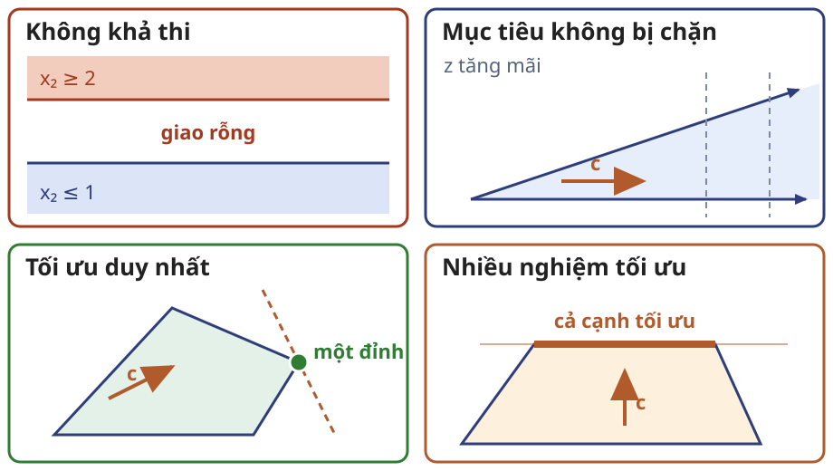
Định lý. Cho đa diện $P$ có ít nhất một điểm cực biên.
Nếu $\max_{x\in P}c^Tx$ có giá trị tối ưu hữu hạn thì có một điểm cực biên tối ưu.
Ý nghĩa: một nghiệm tối ưu nằm trong tập điểm cực biên; với dạng chuẩn, tập này hữu hạn.
Xác định tập nghiệm tối ưu của $\max\ x_1+x_2$ với $x_1+x_2\le2$, $x_1,x_2\ge0$.
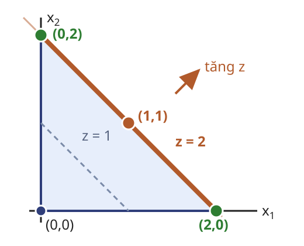
Diễn giải: định lý bảo đảm có một nghiệm tối ưu là điểm cực biên, không phải mọi nghiệm.
Nhu cầu: ở dạng chuẩn, số điểm cực biên có thể lên tới $\binom nm$; cần cách đi sang đỉnh tốt hơn.
Định nghĩa. Hai điểm cực biên $v\ne w$ của $P\subset\mathbb R^n$ kề nhau nếu có chung $n-1$ ràng buộc hoạt động độc lập tuyến tính.
Dạng khác: ở dạng chuẩn không suy biến, cơ sở của hai đỉnh kề khác nhau đúng một cột.
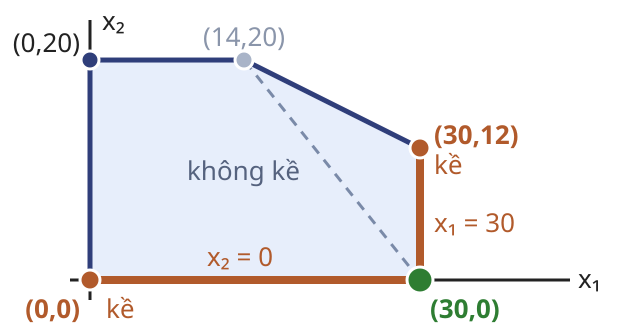
Bổ đề. Cho đa diện $P$ có điểm cực biên và $\max_{x\in P}c^Tx$ hữu hạn.
Nếu điểm cực biên $v$ chưa tối ưu thì có điểm cực biên $w$ kề $v$ với $c^Tw>c^Tv$.
Ý nghĩa: điểm cực biên không có đỉnh kề tốt hơn là điểm tối ưu.
Đầu vào: đa diện $P$ có điểm cực biên, $\max_{x\in P}c^Tx$ hữu hạn, điểm cực biên xuất phát $v$.
Đầu ra: điểm cực biên tối ưu $v$.
Nhận xét. Không đỉnh nào lặp lại vì $c^Tv$ tăng chặt; $P$ có hữu hạn đỉnh nên thuật toán dừng.
$\max\ 2x_1+3x_2$ trên ngũ giác hộp hạt: chạy thuật toán duyệt đỉnh kề từ $(0,0)$.
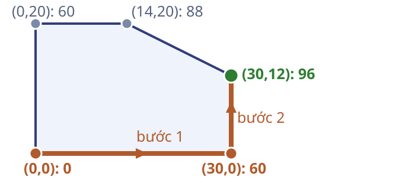
Diễn giải: đỉnh dừng $(30,12)$ có $z^*=96$; bổ đề đỉnh kề cải thiện bảo đảm đỉnh dừng tối ưu.
Câu hỏi: miền hộp hạt $x_1\le30$, $x_2\le20$, $x_1+2x_2\le54$, $x\ge0$, mục tiêu mới $\max\ 2x_1+4x_2$.
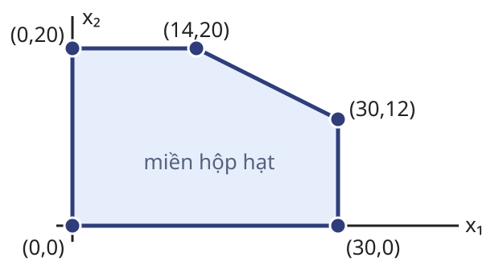
Lời giải: tập nghiệm tối ưu $\{x:\ x_1+2x_2=54,\ 14\le x_1\le30\}$.
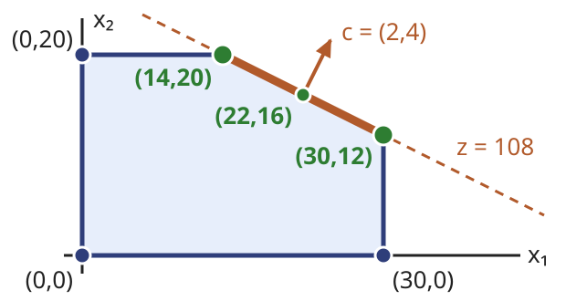
Diễn giải: thuật toán trả về một điểm cực biên tối ưu, không trả về cả cạnh.
Muốn tối ưu một chuỗi quyết định mà không liệt kê mọi chuỗi, cần tóm tắt quá khứ bằng trạng thái.
Trạng thái · Bài toán con · Phương trình Bellman · Giải ngược · Chính sách
Nhu cầu: tối ưu chuỗi quyết định mà không liệt kê từng chuỗi.
$N$ giai đoạn, mỗi giai đoạn $q$ lựa chọn cho $q^N$ chuỗi, chẳng hạn $2^{10}=1024$.
| Quy hoạch tuyến tính | Quy hoạch động | |
|---|---|---|
| Quyết định | một vector $x$ | một chuỗi $u_0,\ldots,u_{N-1}$ |
| Cấu trúc khai thác | hữu hạn đỉnh của đa diện | chi phí nhỏ nhất từ mỗi trạng thái tới đích |
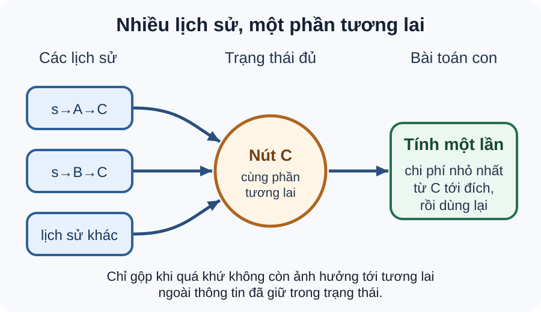
Trực quan. Liệt kê chuỗi thì đoạn từ $C$ tới đích bị tính lại cho mỗi lịch sử tới $C$.
Định nghĩa. Trạng thái (state) là thông tin đủ xác định lựa chọn và chi phí còn lại.
Biết trạng thái thì lịch sử không ảnh hưởng thêm.
Tìm đường $s\to t$ chi phí nhỏ nhất. Đặt $J(v)$ là chi phí nhỏ nhất từ $v$ tới $t$, $J(t)=0$.
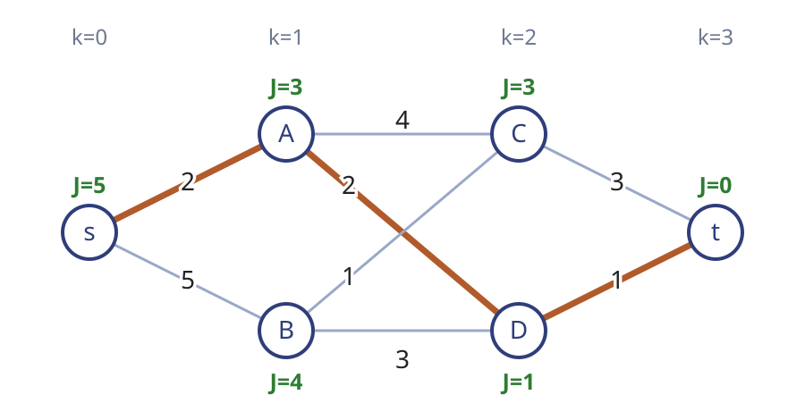
Diễn giải: đường tối ưu $s\to A\to D\to t$, chi phí $5$; mỗi nút tính một lần.
Định nghĩa. Bài toán quyết định hữu hạn tất định với trạng thái đầu $x_0$ cho trước gồm, ở giai đoạn $k=0,\ldots,N-1$:
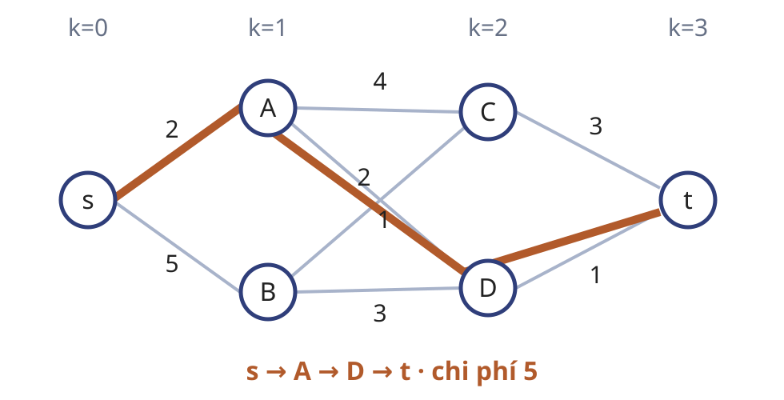
Diễn giải: trên hình, $x_k$ là nút tầng $k$, $u_k$ là cạnh ra, $g_k$ là chi phí cạnh, $g_N(t)=0$.
Gọi $J_k(x)$ là chi phí tối ưu còn lại từ trạng thái $x$ ở giai đoạn $k$.
Định lý. Với bài toán quyết định hữu hạn tất định, $k=N-1,\ldots,0$ và $x\in X_k$:
Chứng minh. Đuôi của chuỗi tối ưu là tối ưu từ trạng thái nó bắt đầu (nguyên lý tối ưu).
Đầu vào: $N$, $x_0$; các tập $X_k$, $U_k(x)$ hữu hạn khác rỗng; các hàm $f_k$, $g_k$, $g_N$.
Đầu ra: $J_0(x_0)$, chính sách (policy) $u_k^*$ và một đường tối ưu.
Mỗi cặp trạng thái–điều khiển $(x,u)$ được xét đúng một lần:
$N$ tầng, mỗi tầng $q$ trạng thái nối đầy đủ với tầng sau: $O(Nq^2)$ phép tính, so với $q^N$ chuỗi.
Ví dụ. $q=2$, $N=20$: khoảng $80$ phép tính so với $2^{20}\approx10^6$ chuỗi.
Lưu ý: nếu trạng thái phải chứa cả lịch sử, $|X_k|$ tăng theo hàm mũ và ưu thế mất.
Câu hỏi: tìm đường $s\to t$ chi phí nhỏ nhất trên đồ thị tầng sau bằng giải ngược Bellman.
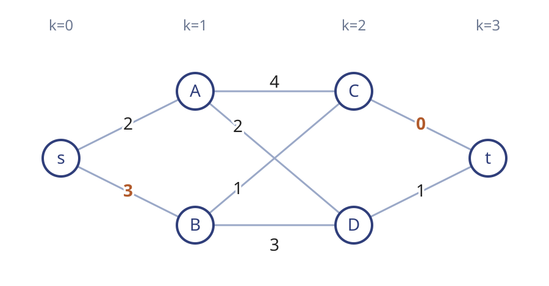
Lời giải:
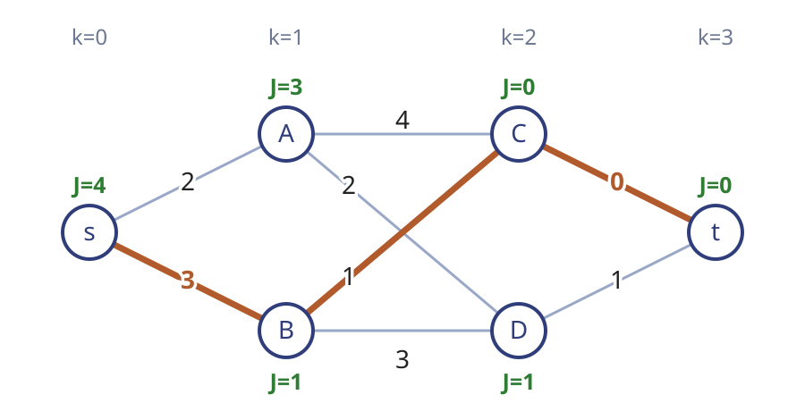
Lượt xuôi: $s\to B\to C\to t$, chi phí $3+1+0=4$.
Kiểm tra: $s\to A\to C\to t$ có chi phí $6$, $s\to A\to D\to t$ có $5$, $s\to B\to D\to t$ có $7$.
Muốn áp dụng mô hình, định lý điểm cực biên và phương trình Bellman, phải giữ đủ giả thiết của từng kết quả.
Giả thiết không được bỏ · Câu hỏi tự kiểm tra · Tài liệu đọc · Phương pháp đơn hình
| Kết quả | Giả thiết không được bỏ | Công thức hoặc thuật toán |
|---|---|---|
| Mô hình LP | tỉ lệ, cộng tính; biến liên tục | $\max c^Tx$, $Ax\le b$, $x\ge0$ |
| Nghiệm cơ sở khả thi | dạng chuẩn, $\operatorname{rank}(A)=m$; $A_B$ khả nghịch; $A_B^{-1}b\ge0$ | $x_B=A_B^{-1}b$, $x_N=0$ |
| Điểm cực biên tối ưu | có điểm cực biên; giá trị tối ưu hữu hạn | duyệt đỉnh kề |
| Phương trình Bellman | hữu hạn, tất định, chi phí cộng, trạng thái đủ | giải ngược từ $J_N=g_N$ |
Câu hỏi: trả lời và nêu kết quả đã dùng.
Phương pháp đơn hình (Bài 08) đổi một cột cơ sở mỗi bước; không suy biến thì sang đỉnh kề.